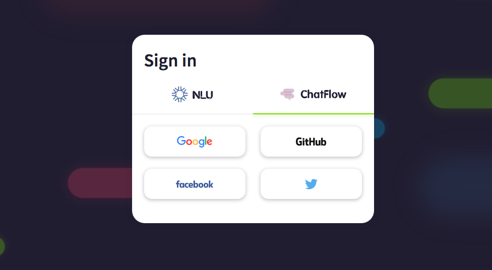
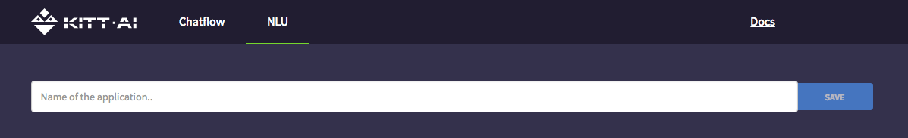
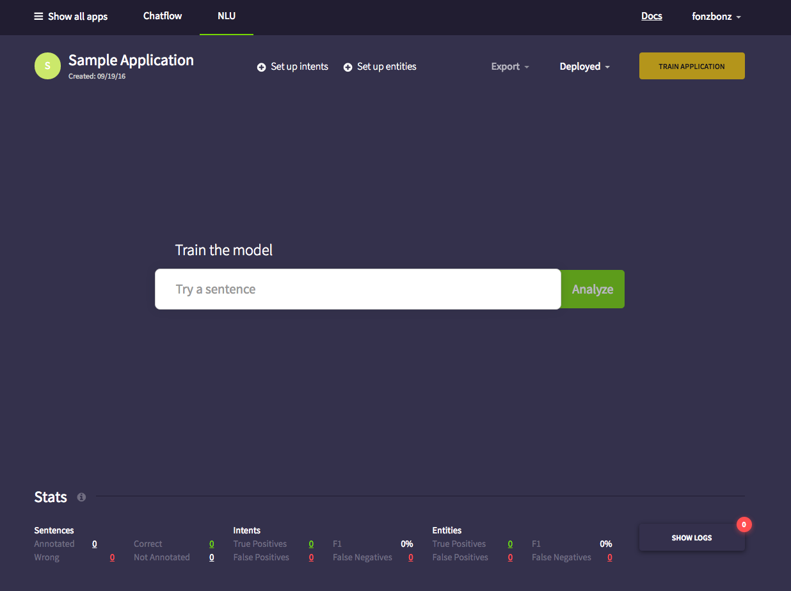
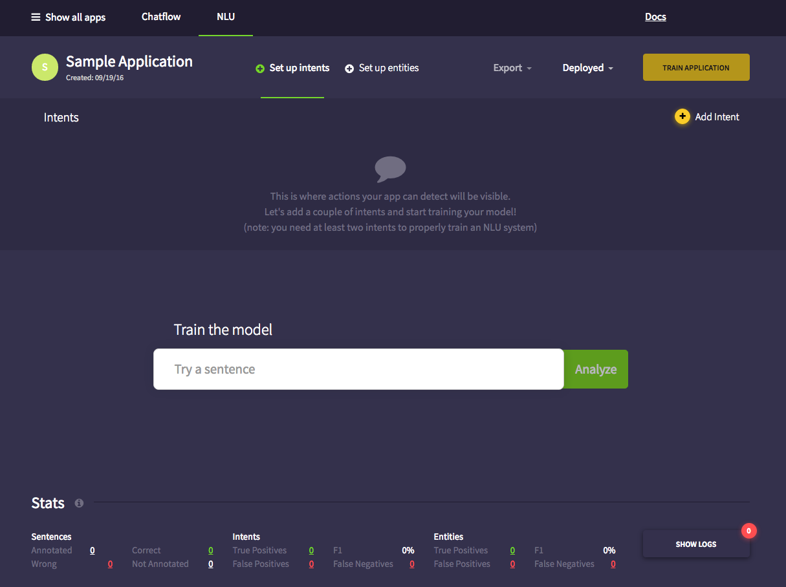
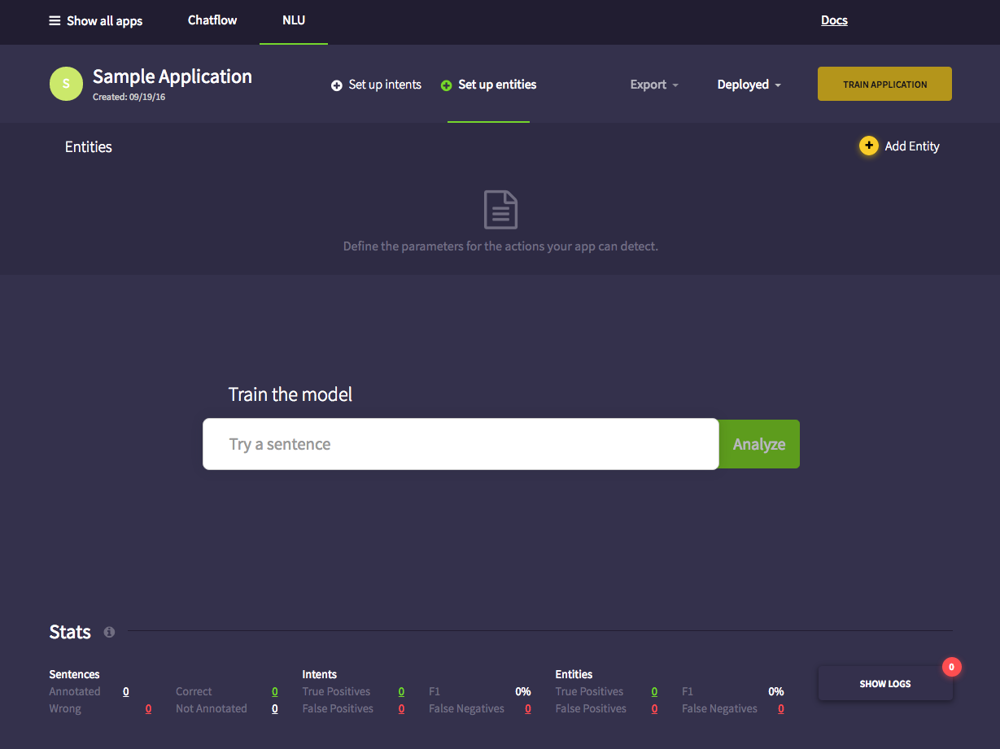
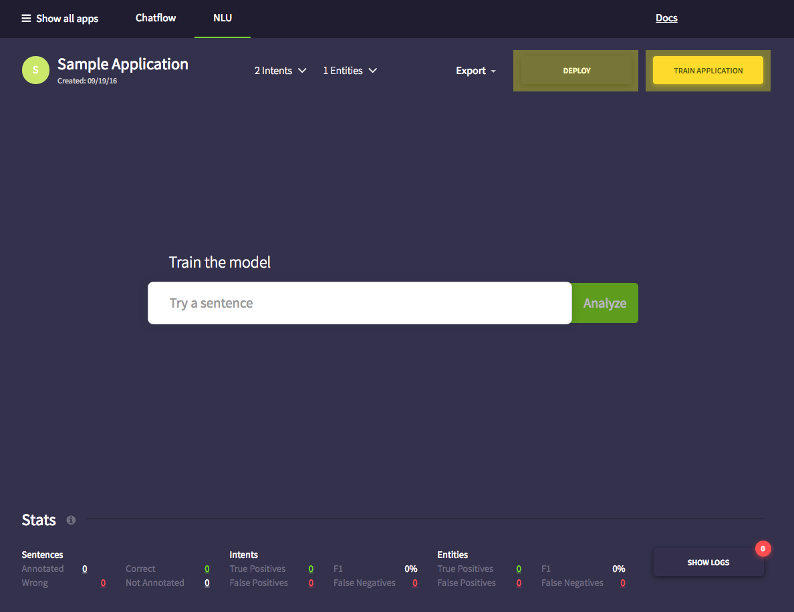
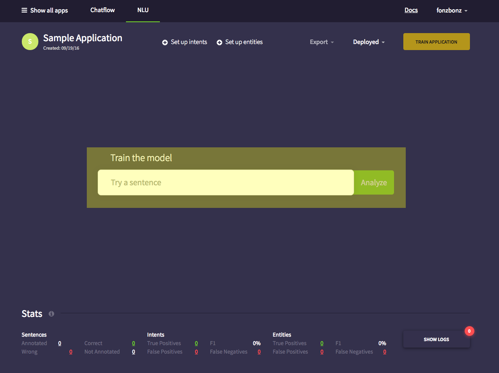
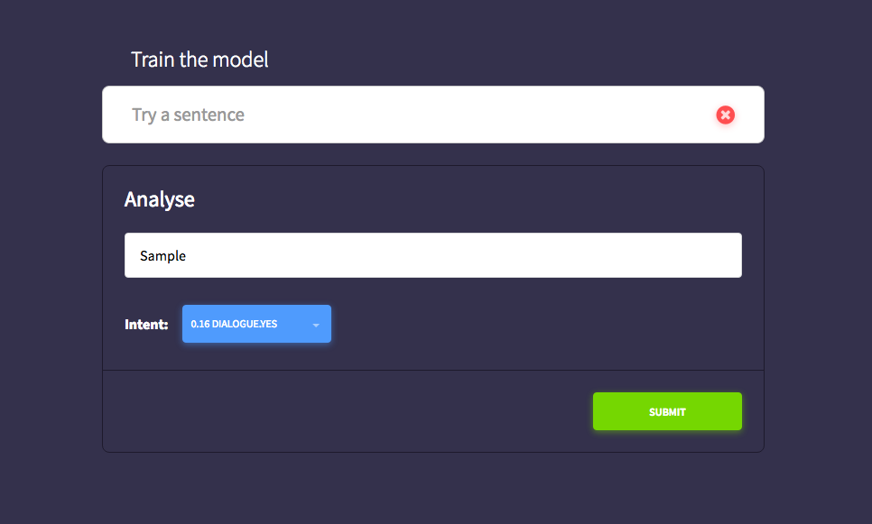
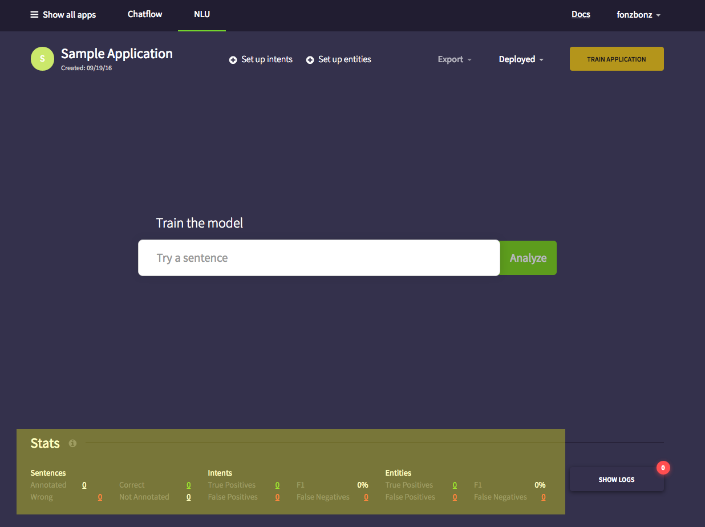

NLU Quick Start¶
Table of Contents
Introduction¶
This NLU tutorial provides a quick overview on how to access and navigate KITT.AI‘s NLU platform.
- By the end of this tutorial, you will be able to:
- Access NLU
- Create a Project
- Orient yourself in the NLU editor
Accessing NLU¶
NLU is hosted by KITT.AI and can be accessed using any web browser.
To Access:
- Go to https://nlu.kitt.ai
- Log in with your Google, Facebook, Twitter or Github account.

Create a New App¶
- Click on “Create new app” to start creating a new app.

- Name you application and click save.

- When the page reloads, you are now in the NLU editor. This is where you can add your intents (utterance type classes) and entities (phrase type classes).

- Under Set up intents, you can add new intents to your model. Your intents will be displayed under the Intents section.

- Under Set up entities, you can add new entities to your model. Your entities will be displayed under the Entities section.
- When you finish adding all the intents and entities, click Train Applcation and then Deploy.

- Next, train your model using the NLU model trainer.

- Make corrections to the classifications and click submit to shave them.

Tip
You can check your model’s performances by refering to the Stats bar at the bottom of the editor.
- To look at all the classifications ever made by the model, click on Show Log.
Tip
You can go back an correct previous classifications and see the exact cases where the model is failing.
Note
In the Log, the first row in each entry refers to the User Annotations. This is where any changes made by the user are stored. The second row contains the original predictions from the model or the App Annotations.
You are now officially oriented with the NLU Editor! The time has come for you to build Natural Language Understanding machines! Are you up to the task?